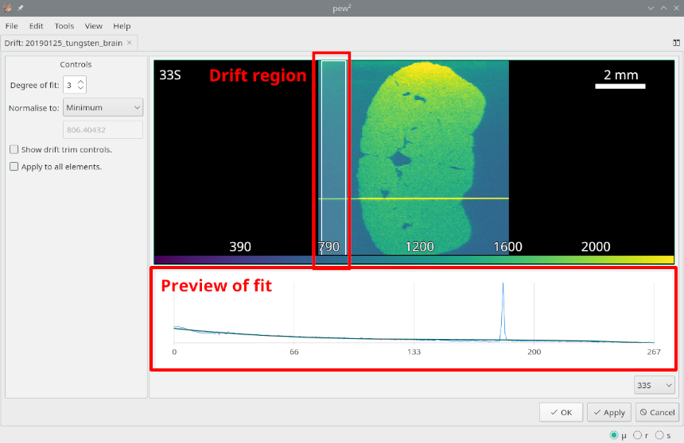

Drift Compensation Tool¶
Tools -> Drift Compensation
Changes in laser, plasma or mass-spec conditions cause signal drift and result in a malformed image. While drift should be minimised by using short runs and ‘warming up’ the ICP-MS there are cases where quantification is not required then drift can be compensated using the Drift Compensation tool.
This tool fits a polynomial to a section of the image and then normalises with respect to the fit. The selection can be moved and resized with the mouse and trimmed if the Show drift time controls check is active. Drift can be normalised to either its maximum or minimum value before being convolved with the image. To use the raw image data instead of a polynomial fit set the Degree of fit to zero.

Important controls of the Drift Compensation tool.¶
See also
- Example: Compensating laser drift.
Example using the drift tool.